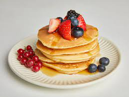

Pankaces

Description
Pancakes are easy to make and they can be eaten with fruits, jam or plain. It is an ideal meal when in a hurry.
you can make them more nutritious by adding different reagents. For this recipe we will refer to a more common - simple dish.
Ingredients:
- Flour: This quick pancake recipe starts with a cup of all-purpose flour.
- Sugar: You will need two tablespoons of white sugar.
- Baking powder: Baking powder acts as a leavening agent, ensuring perfectly fluffy pancakes.
- Salt: Salt enhances the overall flavor of the pancakes, but it will not make the pancakes taste salty.
- Milk and oil: These will add moisture and flavor to the pancakes.
- Egg: A beaten egg lends more moisture and helps bind the batter together.
Steps:
- Combine the dry ingredients.
- Add the wet ingredients and mix.
- Pour the batter onto the pan.
- Cook until bubbles form, flip, and cook on the other side.
- Serve the meal.